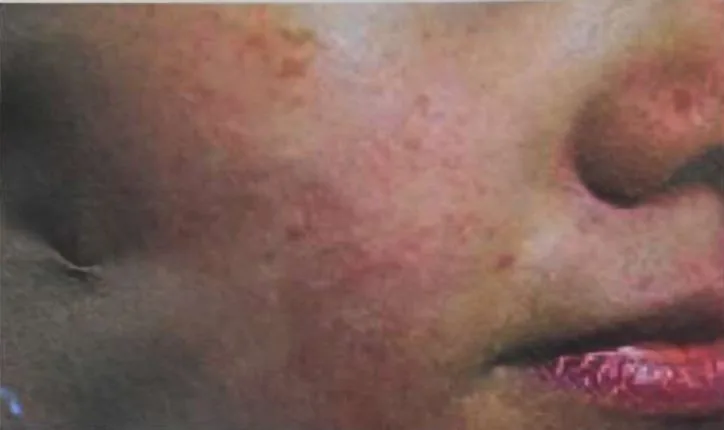
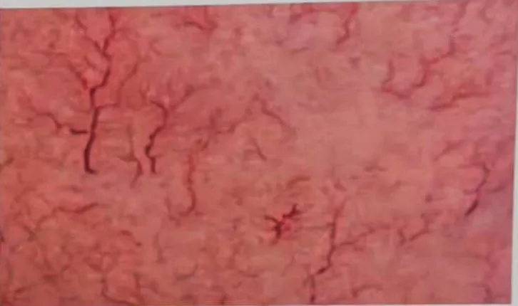

Spider veins (telangiectasia)
Tiny widened blood vessels that show through the skin as thin red, blue or purple lines
What it is
Very small blood vessels near the skin surface become wider and easy to see, like thin red, blue or purple spider webs or branches, most often on the legs and face.
- Legs and face
- More common in women
- Thin red, blue or purple lines
- Which doctor
- Family doctor, skin doctor or vein (vascular) doctor
- Common in
- Adults, more often women; more with age, pregnancy and long standing
- Contagious
- No
- Course
- Often long-lasting and may slowly increase; ask a doctor if they bother you
Common signs

Heavy, tired legsLeg fatigue
Types of red veins on the face

Dot type: scattered red dots on the nose, cheeks or chin 
Line type: longer red lines that cross each other Net type: veins crossing like a spider web 
Patch type: dense redness over a large area
Why red veins show
Red veins can be inherited, or come from wrong skincare, irregular routines, diet, medicine or illness.
Barrier care tips
- Wash with water or a gentle cleanser; pat dry, don't rub
- Avoid soap, acids, alcohol and fragrance on the face
- No scrubs or face massage while the skin is sensitive
- Repair takes about 1 to 6 months; be patient
- Use sunscreen and moisturiser daily; avoid saunas and very hot water
More signs
- Thin red, blue or purple lines under the skin, like a spider web or tree branches
- Most often on the legs and ankles, and on the face (nose and cheeks)
- Usually flat and painless
- They can slowly spread or become more noticeable over time
Why it happens

Runs in the familyGenetic predisposition 
Getting olderAgeing 
Standing or sitting still for longProlonged immobility 
Drinking alcoholAlcohol use
Other causes
- Tiny blood vessels near the skin widen and stay wide
See a doctor first if
- Chest pain, sudden trouble breathing or coughing blood, especially with a swollen leg: call 999
- One leg suddenly swollen, painful, warm or red: go to hospital now
- A leg vein that bleeds heavily after a knock: press firmly and go to hospital now
- A sore near the ankle that stays open, or lower-leg skin turning dark, hard or very itchy: see a doctor
- Many new red spider-like marks on the chest or arms, with yellow skin or eyes or a swollen belly: see a doctor
- Frequent nosebleeds with small red vein spots on the lips, tongue or fingers: see a doctor
If any apply, please see a doctor before a session.
This page is general information. Please keep taking your normal medicine and keep seeing your doctor.
Keep taking your normal medicine and keep seeing your doctor. Our session is a gentle support and does not replace medical care.
Looking after yourself

Stay active every dayRegular physical activity 
Rest wellRest 
Keep a healthy weightWeight management
More ways to look after yourself
- Ask your doctor if compression stockings are safe and suitable for you
- Protect your face from strong sun; if the marks bother you, ask a skin or vein doctor about options
Tell your therapist
- A blood clot or a new swollen leg
- Blood-thinning medicine
- Pregnancy
- Broken, red or sore skin
- Pacemaker or metal implant
Your therapist will go through this with you before starting.
Related conditions
References: General information based on public health sources such as Mayo Clinic, NHS, Cleveland Clinic and NCBI StatPearls.
Page updated: 2026-10-31